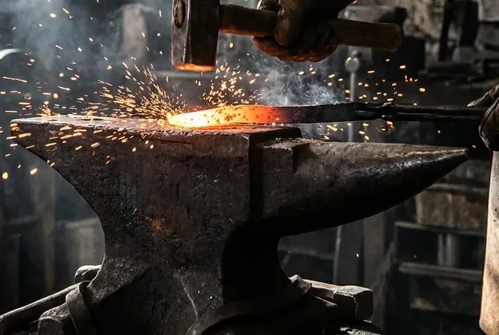
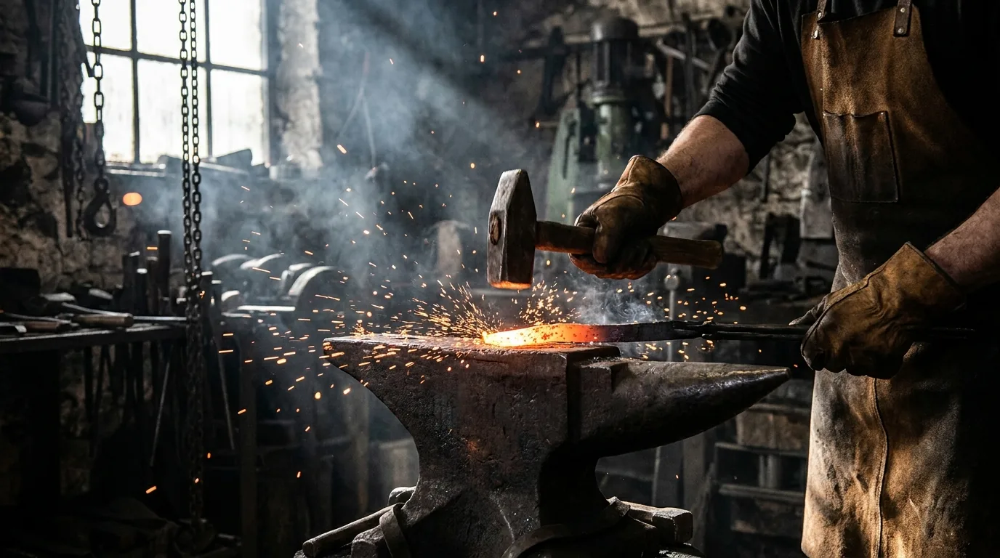
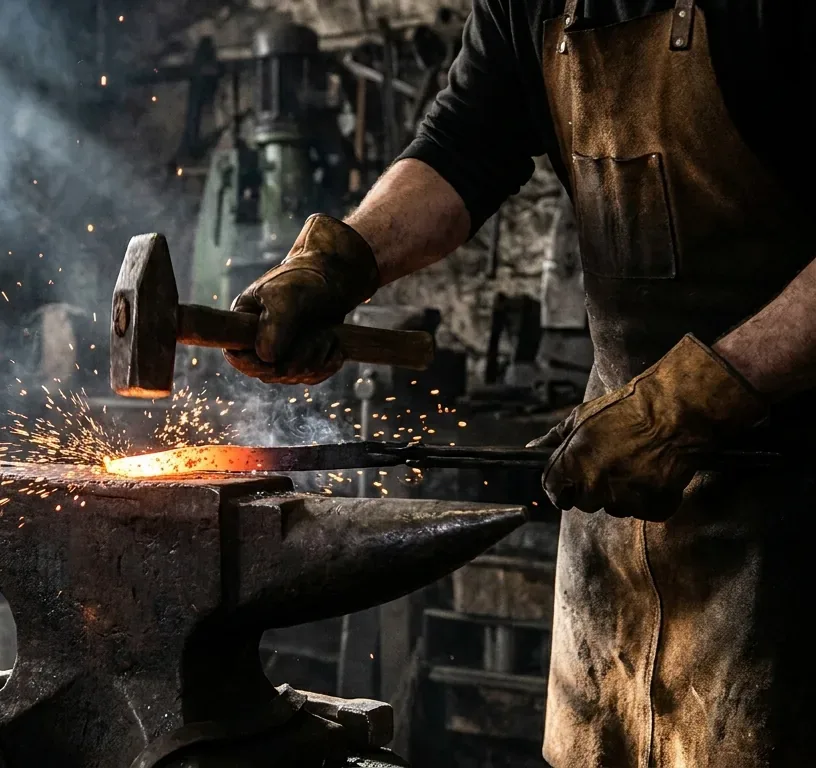

NOS SERVICES
- Escaliers acier
- Verrières d'atelier
- Mobilier sur mesure
- Ferronnerie d'architecte
HORAIRES
Du lundi au vendredi
8h - 12h / 13h30 - 17h30
Le samedi sur rendez-vous
ZONE
Toulouse, Haute-Garonne et départements limitrophes.

Vous êtes le 004217ème visiteur
|
Bienvenue chez Atelier Braise

L'Atelier Braise est une metallerie d'art installée à Toulouse depuis 2006. Nous sommes trois compagnons
métalliers dans une halle de 600 m². Nous dessinons et fabriquons des ouvrages en métal au millimètre, forgés pour durer
un siècle. Chaque pièce sort de nos mains, jamais d'un catalogue.
Marteau, enclume et cintreuse à galets d'un côté, découpe plasma et relevé laser 3D de l'autre. Nous travaillons
en direct avec les architectes et maîtres d'oeuvre, du croquis à la pose. Plus de 240 ouvrages livrés depuis 2006.
>> DEMANDEZ VOTRE DEVIS GRATUIT <<
Nos ouvrages
| Escaliers acier | Hélicoïdaux, droits ou à crémaillère. Limon plié, marches tôle larmée ou chêne massif sur platine. | Acier S235 brut ciré, thermolaquage RAL au choix | 8 à 12 semaines |
| Verrières d'atelier | Profils fins soudés-meulés, vitrage feuilleté 44.2. Pose en feuillure sur cloison ou maçonnerie. | Profilé T et cornière acier, finition noir graphite mat | 4 à 6 semaines |
| Mobilier sur mesure | Tables, consoles, bibliothèques. Assemblages invisibles, plateaux pierre, chêne ou tôle pleine. | Acier, laiton, inox 304L | 3 à 8 semaines |
| Ferronnerie d'architecte | Garde-corps, portails, mains courantes. Exécution sur plans, calepinage et pose comprise. | Fer plein forgé, galvanisation à chaud | Sur étude |
Quelques réalisations
- Escalier hélicoïdal - maison de ville, quartier des Carmes
- Verrière de 9 m - loft à Saint-Cyprien
- Console en laiton brossé - galerie d'art
- Garde-corps en fer plein - appartement sur les quais

Notre méthode
1. Relevé : mesure laser sur site, analyse des appuis et des tolérances. Rien n'est dessiné avant d'avoir vu le mur.
2. Dessin : plans d'exécution au 1/10e, sections et assemblages validés avec l'architecte avant la première coupe.
3. Forge : débit, forge, soudure semi-auto puis meulage. Finition cirée, thermolaquée ou galvanisée selon l'usage.
4. Pose : pose par nos compagnons, jamais sous-traitée. Réglages sur place, réception contradictoire au niveau laser.
Atelier Braise - Toulouse
Email : atelier@example.com
Devis gratuit sous 48h.
|